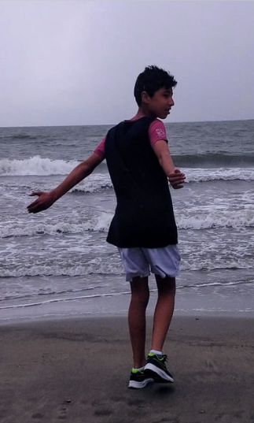

Soy una persona capaz de analizar y resolver problemas de manera responsable y creativa. Con Conocimientos en lenguajes de programación, en paquete Office 365, AutoCAD e Inventor. Habil para utilizar argumentos que influyan en las ideas y acciones de los demás y con la capacidad para trabajar en equipos interdisciplinarios en aras de conseguir los objetivos.

Foto de la primera entrada
Formación Acadeimca
Primaria (2009-2014)
Mi formación de nivel primaria estuvo dividida en dos partes: 1. Del grado 1ero a 2do estudie en el colegio "Gimnasio Moderno los Andes" una de las instituciones eductaivas de mi pueblo. Donde el nivel de enseñanza es de baja calidad. 2. Es por esto que mis padres deciden cambiarnos de colegio. Una institución académica privada llamada "Fervan campestre" donde aprendo y recibo todos las bases personales y académicas necesarias.
Secundaria (2014-2020)
En esta nueva institución logre un buen acoplamiento dando como resultado terminar mis estudios allí. Además gracias a los enlaces del colegio con la cancilleria Alemana logre realizar un intercambio que me ayudaria a crecer como persona y expandir mi conocimiento y percepción del mundo. Cabe resaltar también que en el colegio realice algunos cursos como:
1. Fundamentos de Programación y Tecnologías Digitales yo Industrias Creativas Digitales (Ciclo 1)
Universidad del Norte (2020)
2.Diplomado Unity VR Class Unity. Bogotá, 2017
Pregrado(2022-20XX)
Actualmente soy estudiante de tercer semestre de ingenieria informatica de la Universidad de La Sabana. Y tengo intereses orientados a la ingeniería de software, ciber seguridad y el Big Data.
Para proximos semestres, espero pasar todo sin ningun tipo de problema. Me gustaria irme de intercambio. Luego de graduarme, se en que me gustaria trabajar y adquirir experiencia apenas me gradue, Luego hare un master teniendo en cuenta todas las salidas con mayor profundidad.